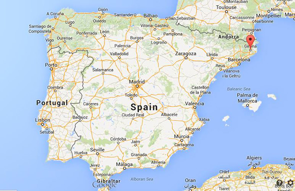

Join us for
a special moment of our wedding celebration
RSVP
When
The wedding will be on Saturday, June 24th (Saint John Day!) around 5pm at Can Mateu de la Creu.
The following day -Sunday, June 25th- there will be a vermut ("Fer el vermut is the Catalan phrase literally meaning “to do the vermouth,” though it is now a catch-all saying used to convey an afternoon pre-lunch drink and snack with friends, regardless of whether vermut is actually consumed." more info) by the water on us, so we can all enjoy some beers and some sun and laugh about past night : ) We are still deciding what's the best location for this and we will keep you posted. Only thing you need to know right now is, bring beach clothes!
Where
The Wedding Celebration will be at the beautiful masia (Catalan country house) of Can Mateu de la Creu. Located nearby the beautiful town of La Bisbal d’Emporda, Girona (Spain).
Google Maps Link: https://goo.gl/gRu3OV
Sunday’s specific beach/vermut location TBD.
How toget there
Both the Wedding Celebration venue and the accommodation options take place nearby the town of La Bisbal de L’Emporda (in the Girona region). This is located at 90 miles away from Barcelona town (aprox.) and 16 miles away from Girona town.
By plane: You have two options: Barcelona Airport (BCN) - 90 miles away from the venue. Direct flight available from NY. You can take a train (see below) to Girona town or rent a car to the wedding site.
Girona Airport (GRO) - 16 miles away from the venue. No direct flight. You can take a taxi or bus to Girona town or rent a car to the wedding site.
By train: You can get to the Wedding Celebration area from Barcelona to Girona town by train. The regular train takes about 1h and there is also a high speed option (AVE) that takes only 30min. From there you’ll need a car (16 miles away) to get to the wedding site.
By car: Whether you decide to ride with friends or rent a car in Girona or Barcelona, just follow Google Maps directions to the Wedding Celebration venue and/or the different accommodations spots.
There will be a shuttle bus arranged to take you all from accommodation to wedding venue (shuttle stops TBD), but if you're traveling with your couple or friends we highly recommend renting a car so you can explore the region.
What to doin the area
The wedding will take place near Girona town, which is the capital of the Girona region (pretty much like NYC and NY State), one of the 4 regions that belong to Catalonia : )

There's plenty of stuff and to and beautiful things to see. From nature, to culture, to amazing gastronomy.
If you like the beach, you're in luck. The north Catalan coastline it's known as Costa Brava. It extends for almost 40miles and full of beautiful beaches where dramatic cliffs and pine trees dive straight into crystal waters, not to mention all the cute old fisherman towns, such as Calella de Palafrugell or Fornells. Other beautiful towns you may want to visit in the area are: Begur, Pals and of course La Bisbal de l'Emporda (right next to us), which is very famous for its ceramic craftmanship!
Some of the best beaches nearby are: Cala Estreta, Aiguablava, Sa Tuna, Tamariu or Llafranc.
"L'Emporda" (that's the name of the specific Girona region we are in) is also the place that gave birth to one of the most famous painters (and movements) worldwide: Dalí. You can visit his hometown Portlligat (Cadaques) and visit his house or go to Figueres and visit his museum.
Girona (capital) is also a must see during your stay in Girona. It became internationally famous recently because it got featured on HBO's Game of Thrones (remember the "Shame" scene with the stairs?) but Girona is famous for more, more than that. Check out the cathedral, the bridges, the main square and do not miss its restaurants.
If you like good food and restaurants you are, again, in luck. Gastronomy in L'Emporda is really second to none. In terms of restaurants, let's just say the the famous "El Bullí" (former #1 restaurant in the world, closed) and "El Celler de Can Roca" (current #2 best restaurant of the world) are both located in Girona. Here's a list of some of the best (Michelin star) restaurants in the region:
Lastly, for those of you spending some time in Barcelona before or after the wedding, here's a list of our favorite places to eat and drink
We hope that you guys have an amazing stay!!
Accommodations
Here are list of accommodations recommended by local friends. Please feel free to reach out to us if you have a trouble booking.